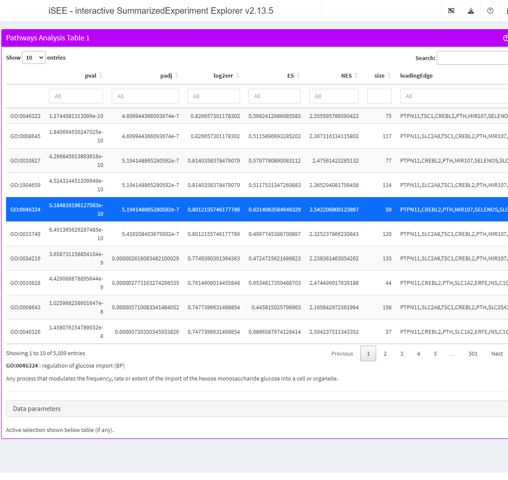

vignettes/gene-ontology.Rmd
gene-ontology.RmdGenerate pathway analysis results using fgsea.
library("org.Hs.eg.db")
library("fgsea")
# Example data ----
## Pathways
pathways <- select(org.Hs.eg.db, keys(org.Hs.eg.db, "SYMBOL"), c("GOALL"), keytype = "SYMBOL")
pathways <- subset(pathways, ONTOLOGYALL == "BP")
pathways <- unique(pathways[, c("SYMBOL", "GOALL")])
pathways <- split(pathways$SYMBOL, pathways$GOALL)
len_pathways <- lengths(pathways)
pathways <- pathways[len_pathways > 15 & len_pathways < 500]
## Features
set.seed(1)
# simulate a score for all genes found across all pathways
feature_stats <- rnorm(length(unique(unlist(pathways))))
names(feature_stats) <- unique(unlist(pathways))
# arbitrarily select a pathway to simulate enrichment
pathway_id <- "GO:0046324"
pathway_genes <- pathways[[pathway_id]]
# increase score of genes in the selected pathway to simulate enrichment
feature_stats[pathway_genes] <- feature_stats[pathway_genes] + 1
# fgsea ----
set.seed(42)
fgseaRes <- fgsea(pathways = pathways,
stats = feature_stats,
minSize = 15,
maxSize = 500)
head(fgseaRes[order(pval), ])
#> pathway pval padj log2err ES NES size
#> 1: GO:0046324 1.269136e-12 6.382484e-09 0.9101197 0.6711777 2.741065 59
#> 2: GO:0010827 2.446779e-10 6.152426e-07 0.8140358 0.5770651 2.496459 77
#> 3: GO:0046323 5.603099e-10 9.392661e-07 0.8012156 0.5850863 2.502307 75
#> 4: GO:0046326 1.644826e-08 1.707733e-05 0.7337620 0.6866838 2.531795 37
#> 5: GO:1904659 1.697886e-08 1.707733e-05 0.7337620 0.4889759 2.240482 113
#> 6: GO:0008645 2.608734e-08 2.186554e-05 0.7337620 0.4777062 2.196916 116
#> leadingEdge
#> 1: OCLN,ARPP19,RNASEL,TERT,RHOQ,MIR143,...
#> 2: OCLN,ARPP19,RNASEL,TERT,RHOQ,MIR143,...
#> 3: OCLN,ARPP19,RNASEL,TERT,RHOQ,MIR143,...
#> 4: OCLN,ARPP19,RNASEL,TERT,RHOQ,GPC3,...
#> 5: OCLN,ARPP19,RNASEL,TERT,RHOQ,MIR143,...
#> 6: OCLN,ARPP19,RNASEL,TERT,RHOQ,MIR143,...Embed the fgsea results in the SummarizedExperiment object.
library("SummarizedExperiment")
library("iSEEpathways")
ngenes <- length(feature_stats)
cnts <- matrix(rnbinom(n=ngenes*2, mu=100, size=1/0.5), nrow=ngenes)
rownames(cnts) <- names(feature_stats)
se <- SummarizedExperiment(assay = list(counts = cnts))
fgseaRes <- as.data.frame(fgseaRes)
rownames(fgseaRes) <- fgseaRes$pathway
metadata(se) <- list("iSEEpathways" = list("fgsea" = fgseaRes))Configure the app option PathwaysTable.select.details to
define a function that display information about the currently selected
GO term.
library("iSEE")
library("GO.db")
library("shiny")
go_details <- function(x) {
info <- select(GO.db, x, c("TERM", "ONTOLOGY", "DEFINITION"), "GOID")
html <- list(p(strong(info$GOID), ":", info$TERM, paste0("(", info$ONTOLOGY, ")")))
if (!is.na(info$DEFINITION)) {
html <- append(html, list(p(info$DEFINITION)))
}
tagList(html)
}
se <- registerAppOptions(se, PathwaysTable.select.details = go_details)Configure the app initial state and launch the live app.
app <- iSEE(se, initial = list(
PathwaysTable(ResultName="fgsea", PanelWidth = 12L)
))
if (interactive()) {
shiny::runApp(app)
}
The iSEEpathways package (Rue-Albrecht, 2022) was made possible thanks to:
This package was developed using biocthis.
Code for creating the vignette
## Create the vignette
library("rmarkdown")
system.time(render("gene-ontology.Rmd", "BiocStyle::html_document"))
## Extract the R code
library("knitr")
knit("gene-ontology.Rmd", tangle = TRUE)Date the vignette was generated.
#> [1] "2023-02-16 10:06:00 UTC"Wallclock time spent generating the vignette.
#> Time difference of 41.021 secsR session information.
#> ─ Session info ───────────────────────────────────────────────────────────────────────────────────────────────────────
#> setting value
#> version R Under development (unstable) (2023-02-09 r83797)
#> os Ubuntu 22.04.1 LTS
#> system x86_64, linux-gnu
#> ui X11
#> language en
#> collate en_US.UTF-8
#> ctype en_US.UTF-8
#> tz UTC
#> date 2023-02-16
#> pandoc 2.19.2 @ /usr/local/bin/ (via rmarkdown)
#>
#> ─ Packages ───────────────────────────────────────────────────────────────────────────────────────────────────────────
#> package * version date (UTC) lib source
#> AnnotationDbi * 1.61.0 2022-11-01 [1] Bioconductor
#> backports 1.4.1 2021-12-13 [1] CRAN (R 4.3.0)
#> bibtex 0.5.1 2023-01-26 [1] CRAN (R 4.3.0)
#> Biobase * 2.59.0 2022-11-01 [1] Bioconductor
#> BiocGenerics * 0.45.0 2022-11-01 [1] Bioconductor
#> BiocManager 1.30.19 2022-10-25 [2] CRAN (R 4.3.0)
#> BiocParallel 1.33.9 2022-12-23 [1] Bioconductor
#> BiocStyle * 2.27.1 2023-01-19 [1] Bioconductor
#> Biostrings 2.67.0 2022-11-01 [1] Bioconductor
#> bit 4.0.5 2022-11-15 [1] CRAN (R 4.3.0)
#> bit64 4.0.5 2020-08-30 [1] CRAN (R 4.3.0)
#> bitops 1.0-7 2021-04-24 [1] CRAN (R 4.3.0)
#> blob 1.2.3 2022-04-10 [1] CRAN (R 4.3.0)
#> bookdown 0.32 2023-01-17 [1] CRAN (R 4.3.0)
#> bslib 0.4.2 2022-12-16 [2] CRAN (R 4.3.0)
#> cachem 1.0.6 2021-08-19 [2] CRAN (R 4.3.0)
#> circlize 0.4.15 2022-05-10 [1] CRAN (R 4.3.0)
#> cli 3.6.0 2023-01-09 [2] CRAN (R 4.3.0)
#> clue 0.3-64 2023-01-31 [1] CRAN (R 4.3.0)
#> cluster 2.1.4 2022-08-22 [3] CRAN (R 4.3.0)
#> codetools 0.2-19 2023-02-01 [3] CRAN (R 4.3.0)
#> colorspace 2.1-0 2023-01-23 [1] CRAN (R 4.3.0)
#> colourpicker 1.2.0 2022-10-28 [1] CRAN (R 4.3.0)
#> ComplexHeatmap 2.15.0 2022-11-01 [1] Bioconductor
#> cowplot 1.1.1 2020-12-30 [1] CRAN (R 4.3.0)
#> crayon 1.5.2 2022-09-29 [2] CRAN (R 4.3.0)
#> data.table 1.14.6 2022-11-16 [1] CRAN (R 4.3.0)
#> DBI 1.1.3 2022-06-18 [1] CRAN (R 4.3.0)
#> DelayedArray 0.25.0 2022-11-01 [1] Bioconductor
#> desc 1.4.2 2022-09-08 [2] CRAN (R 4.3.0)
#> digest 0.6.31 2022-12-11 [2] CRAN (R 4.3.0)
#> doParallel 1.0.17 2022-02-07 [1] CRAN (R 4.3.0)
#> dplyr 1.1.0 2023-01-29 [1] CRAN (R 4.3.0)
#> DT 0.27 2023-01-17 [1] CRAN (R 4.3.0)
#> ellipsis 0.3.2 2021-04-29 [2] CRAN (R 4.3.0)
#> evaluate 0.20 2023-01-17 [2] CRAN (R 4.3.0)
#> fansi 1.0.4 2023-01-22 [2] CRAN (R 4.3.0)
#> fastmap 1.1.0 2021-01-25 [2] CRAN (R 4.3.0)
#> fastmatch 1.1-3 2021-07-23 [1] CRAN (R 4.3.0)
#> fgsea * 1.25.0 2022-11-01 [1] Bioconductor
#> fontawesome 0.5.0 2023-01-25 [2] CRAN (R 4.3.0)
#> foreach 1.5.2 2022-02-02 [1] CRAN (R 4.3.0)
#> fs 1.6.1 2023-02-06 [2] CRAN (R 4.3.0)
#> generics 0.1.3 2022-07-05 [1] CRAN (R 4.3.0)
#> GenomeInfoDb * 1.35.15 2023-02-02 [1] Bioconductor
#> GenomeInfoDbData 1.2.9 2022-12-06 [1] Bioconductor
#> GenomicRanges * 1.51.4 2022-12-15 [1] Bioconductor
#> GetoptLong 1.0.5 2020-12-15 [1] CRAN (R 4.3.0)
#> ggplot2 3.4.1 2023-02-10 [1] CRAN (R 4.3.0)
#> ggrepel 0.9.3 2023-02-03 [1] CRAN (R 4.3.0)
#> GlobalOptions 0.1.2 2020-06-10 [1] CRAN (R 4.3.0)
#> glue 1.6.2 2022-02-24 [2] CRAN (R 4.3.0)
#> GO.db * 3.16.0 2022-12-06 [1] Bioconductor
#> gtable 0.3.1 2022-09-01 [1] CRAN (R 4.3.0)
#> highr 0.10 2022-12-22 [2] CRAN (R 4.3.0)
#> htmltools 0.5.4 2022-12-07 [2] CRAN (R 4.3.0)
#> htmlwidgets 1.6.1 2023-01-07 [2] CRAN (R 4.3.0)
#> httpuv 1.6.9 2023-02-14 [2] CRAN (R 4.3.0)
#> httr 1.4.4 2022-08-17 [2] CRAN (R 4.3.0)
#> igraph 1.4.0 2023-02-10 [1] CRAN (R 4.3.0)
#> IRanges * 2.33.0 2022-11-01 [1] Bioconductor
#> iSEE * 2.11.4 2023-02-09 [1] Bioconductor
#> iSEEpathways * 0.99.0 2023-02-16 [1] Bioconductor
#> iterators 1.0.14 2022-02-05 [1] CRAN (R 4.3.0)
#> jquerylib 0.1.4 2021-04-26 [2] CRAN (R 4.3.0)
#> jsonlite 1.8.4 2022-12-06 [2] CRAN (R 4.3.0)
#> KEGGREST 1.39.0 2022-11-01 [1] Bioconductor
#> knitr 1.42 2023-01-25 [2] CRAN (R 4.3.0)
#> later 1.3.0 2021-08-18 [2] CRAN (R 4.3.0)
#> lattice 0.20-45 2021-09-22 [3] CRAN (R 4.3.0)
#> lifecycle 1.0.3 2022-10-07 [2] CRAN (R 4.3.0)
#> lubridate 1.9.2 2023-02-10 [1] CRAN (R 4.3.0)
#> magrittr 2.0.3 2022-03-30 [2] CRAN (R 4.3.0)
#> Matrix 1.5-3 2022-11-11 [3] CRAN (R 4.3.0)
#> MatrixGenerics * 1.11.0 2022-11-01 [1] Bioconductor
#> matrixStats * 0.63.0 2022-11-18 [1] CRAN (R 4.3.0)
#> memoise 2.0.1 2021-11-26 [2] CRAN (R 4.3.0)
#> mgcv 1.8-41 2022-10-21 [3] CRAN (R 4.3.0)
#> mime 0.12 2021-09-28 [2] CRAN (R 4.3.0)
#> miniUI 0.1.1.1 2018-05-18 [2] CRAN (R 4.3.0)
#> munsell 0.5.0 2018-06-12 [1] CRAN (R 4.3.0)
#> nlme 3.1-162 2023-01-31 [3] CRAN (R 4.3.0)
#> org.Hs.eg.db * 3.16.0 2022-12-06 [1] Bioconductor
#> pillar 1.8.1 2022-08-19 [2] CRAN (R 4.3.0)
#> pkgconfig 2.0.3 2019-09-22 [2] CRAN (R 4.3.0)
#> pkgdown 2.0.7 2022-12-14 [2] CRAN (R 4.3.0)
#> plyr 1.8.8 2022-11-11 [1] CRAN (R 4.3.0)
#> png 0.1-8 2022-11-29 [1] CRAN (R 4.3.0)
#> promises 1.2.0.1 2021-02-11 [2] CRAN (R 4.3.0)
#> purrr 1.0.1 2023-01-10 [2] CRAN (R 4.3.0)
#> R6 2.5.1 2021-08-19 [2] CRAN (R 4.3.0)
#> ragg 1.2.5 2023-01-12 [2] CRAN (R 4.3.0)
#> RColorBrewer 1.1-3 2022-04-03 [1] CRAN (R 4.3.0)
#> Rcpp 1.0.10 2023-01-22 [2] CRAN (R 4.3.0)
#> RCurl 1.98-1.10 2023-01-27 [1] CRAN (R 4.3.0)
#> RefManageR * 1.4.0 2022-09-30 [1] CRAN (R 4.3.0)
#> rintrojs 0.3.2 2022-08-09 [1] CRAN (R 4.3.0)
#> rjson 0.2.21 2022-01-09 [1] CRAN (R 4.3.0)
#> rlang 1.0.6 2022-09-24 [2] CRAN (R 4.3.0)
#> rmarkdown 2.20 2023-01-19 [2] CRAN (R 4.3.0)
#> rprojroot 2.0.3 2022-04-02 [2] CRAN (R 4.3.0)
#> RSQLite 2.2.20 2022-12-22 [1] CRAN (R 4.3.0)
#> S4Vectors * 0.37.3 2022-12-07 [1] Bioconductor
#> sass 0.4.5 2023-01-24 [2] CRAN (R 4.3.0)
#> scales 1.2.1 2022-08-20 [1] CRAN (R 4.3.0)
#> sessioninfo * 1.2.2 2021-12-06 [2] CRAN (R 4.3.0)
#> shape 1.4.6 2021-05-19 [1] CRAN (R 4.3.0)
#> shiny * 1.7.4 2022-12-15 [2] CRAN (R 4.3.0)
#> shinyAce 0.4.2 2022-05-06 [1] CRAN (R 4.3.0)
#> shinydashboard 0.7.2 2021-09-30 [1] CRAN (R 4.3.0)
#> shinyjs 2.1.0 2021-12-23 [1] CRAN (R 4.3.0)
#> shinyWidgets 0.7.6 2023-01-08 [1] CRAN (R 4.3.0)
#> SingleCellExperiment * 1.21.0 2022-11-01 [1] Bioconductor
#> stringi 1.7.12 2023-01-11 [2] CRAN (R 4.3.0)
#> stringr 1.5.0 2022-12-02 [2] CRAN (R 4.3.0)
#> SummarizedExperiment * 1.29.1 2022-11-04 [1] Bioconductor
#> systemfonts 1.0.4 2022-02-11 [2] CRAN (R 4.3.0)
#> textshaping 0.3.6 2021-10-13 [2] CRAN (R 4.3.0)
#> tibble 3.1.8 2022-07-22 [2] CRAN (R 4.3.0)
#> tidyselect 1.2.0 2022-10-10 [1] CRAN (R 4.3.0)
#> timechange 0.2.0 2023-01-11 [1] CRAN (R 4.3.0)
#> utf8 1.2.3 2023-01-31 [2] CRAN (R 4.3.0)
#> vctrs 0.5.2 2023-01-23 [2] CRAN (R 4.3.0)
#> vipor 0.4.5 2017-03-22 [1] CRAN (R 4.3.0)
#> viridisLite 0.4.1 2022-08-22 [1] CRAN (R 4.3.0)
#> xfun 0.37 2023-01-31 [2] CRAN (R 4.3.0)
#> xml2 1.3.3 2021-11-30 [2] CRAN (R 4.3.0)
#> xtable 1.8-4 2019-04-21 [2] CRAN (R 4.3.0)
#> XVector 0.39.0 2022-11-01 [1] Bioconductor
#> yaml 2.3.7 2023-01-23 [2] CRAN (R 4.3.0)
#> zlibbioc 1.45.0 2022-11-01 [1] Bioconductor
#>
#> [1] /__w/_temp/Library
#> [2] /usr/local/lib/R/site-library
#> [3] /usr/local/lib/R/library
#>
#> ──────────────────────────────────────────────────────────────────────────────────────────────────────────────────────This vignette was generated using BiocStyle (Oleś, 2023) with knitr (Xie, 2023) and rmarkdown (Allaire, Xie, McPherson et al., 2023) running behind the scenes.
Citations made with RefManageR (McLean, 2017).
[1] J. Allaire, Y. Xie, J. McPherson, et al. rmarkdown: Dynamic Documents for R. R package version 2.20. 2023. URL: https://github.com/rstudio/rmarkdown.
[2] M. W. McLean. “RefManageR: Import and Manage BibTeX and BibLaTeX References in R”. In: The Journal of Open Source Software (2017). DOI: 10.21105/joss.00338.
[3] A. Oleś. BiocStyle: Standard styles for vignettes and other Bioconductor documents. R package version 2.27.1. 2023. URL: https://github.com/Bioconductor/BiocStyle.
[4] R Core Team. R: A Language and Environment for Statistical Computing. R Foundation for Statistical Computing. Vienna, Austria, 2023. URL: https://www.R-project.org/.
[5] K. Rue-Albrecht. iSEEpathways: iSEE extension for panels related to pathway analysis. R package version 0.99.0. 2022. URL: https://github.com/iSEE/iSEEpathways.
[6] H. Wickham. “testthat: Get Started with Testing”. In: The R Journal 3 (2011), pp. 5–10. URL: https://journal.r-project.org/archive/2011-1/RJournal_2011-1_Wickham.pdf.
[7] H. Wickham, W. Chang, R. Flight, et al. sessioninfo: R Session Information. R package version 1.2.2. 2021. URL: https://CRAN.R-project.org/package=sessioninfo.
[8] Y. Xie. knitr: A General-Purpose Package for Dynamic Report Generation in R. R package version 1.42. 2023. URL: https://yihui.org/knitr/.